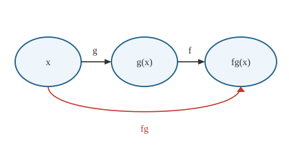
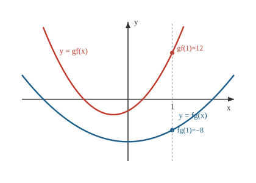

<script src="/assets/redirect.js"></script>
<section class="theory" data-section="P1-2.2">
<h2>2.2 Composite functions</h2>
<p class="src">Based on Cambridge International AS &amp; A Level Mathematics: Pure Mathematics 1 Coursebook (Sue Pemberton), Chapter 2, printed pp.39–43 (Key points 2.1–2.2, Worked examples 2.3–2.6 style, Exercise 2B). Printed pages were read from P1.pdf (printed 39–43 = PDF 51–55). Own wording and new numbers. Page 43 also begins the inverse-function subsection, which is taught in P1-2.3.</p>
<p class="key-words"><strong>Key words:</strong> <em>composite function</em></p>
<p>When one function is followed by another, the result is a <strong>composite function</strong>. The notation \(fg(x)\) means that \(g\) acts on \(x\) first, and then \(f\) acts on the result. In general \(fg(x)\neq gf(x)\). The composite \(ff(x)\) means that \(f\) is applied twice. The composite \(fg\) only exists if the range of g is contained in the domain of f.</p>
<figure>

<figcaption>\(fg\) means “first do \(g\), then do \(f\)”.</figcaption>
</figure>
<div class="worked-example">
<h4>Worked example 1</h4>
<p class="src">Book: Worked example 2.3 style, printed p.40. New numbers.</p>
<p>\(f(x)=x^2-5\) for \(x\in\mathbb{R}\), and \(g(x)=\dfrac{3x+1}{x-1}\) for \(x\in\mathbb{R}\), \(x\neq 1\). Find \(fg(3)\).</p>
<ol class="steps">
<li>\(g\) acts first: \(g(3)=\dfrac{10}{2}=5\). <span class="mark">M1</span></li>
<li>Then \(fg(3)=f(5)=25-5=20\). <span class="mark">A1</span></li>
</ol>
<p class="final"><strong>Answer:</strong> \(20\)</p>
</div>
<div class="worked-example">
<h4>Worked example 2</h4>
<p class="src">Book: Worked example 2.4 style, printed p.40. New numbers.</p>
<p>\(f(x)=3x+1\) for \(x\in\mathbb{R}\) and \(g(x)=x^2-4\) for \(x\in\mathbb{R}\). Find expressions for \(fg(x)\), \(gf(x)\) and \(ff(x)\).</p>
<ol class="steps">
<li>\(fg(x)=f(x^2-4)=3(x^2-4)+1=3x^2-11\). <span class="mark">B1</span></li>
<li>\(gf(x)=g(3x+1)=(3x+1)^2-4=9x^2+6x-3\). <span class="mark">B1</span></li>
<li>\(ff(x)=f(3x+1)=3(3x+1)+1=9x+4\). <span class="mark">B1</span></li>
</ol>
<p class="final"><strong>Answer:</strong> \(fg(x)=3x^2-11\), \(gf(x)=9x^2+6x-3\), \(ff(x)=9x+4\)</p>
</div>
<figure>

<figcaption>For the functions of Worked example 2, the graphs of \(fg\) and \(gf\) are different, and \(fg(1)=-8\) while \(gf(1)=12\).</figcaption>
</figure>
<script src="../../assets/widget-kinds-pkg12.js"></script>
<div class="ms-widget" data-widget="composition"><p class="ms-widget-fallback">Interactive figure: the composite functions fg and gf.</p></div>
<div class="worked-example">
<h4>Worked example 3</h4>
<p class="src">Book: Worked example 2.5 style, printed pp.40–41. New numbers.</p>
<p>\(f(x)=\dfrac{4}{x+1}\) for \(x\in\mathbb{R}\), \(x\neq -1\). Find an expression for \(ff(x)\).</p>
<ol class="steps">
<li>\(ff(x)=f\bigl(\dfrac{4}{x+1}\bigr)=\dfrac{4}{\dfrac{4}{x+1}+1}=\dfrac{4}{\dfrac{4+x+1}{x+1}}=\dfrac{4(x+1)}{x+5}\). <span class="mark">M1 A1</span></li>
</ol>
<p class="final"><strong>Answer:</strong> \(\dfrac{4(x+1)}{x+5}\)</p>
</div>
<h3>Common mistakes</h3>
<ul>
<li>Doing the functions in the wrong order (computing \(gf\) when \(fg\) was asked for), or multiplying the two expressions instead of composing them.</li>
<li>Leaving a composite unsimplified, especially when a fraction is substituted into another fraction.</li>
<li>Ignoring a restriction that means the composite is not defined for some inputs.</li>
</ul>
<h3>Quick checks</h3>
<div class="quick-check" data-q="QC1">
<h4>Quick check 1</h4>
<p>\(f(x)=2x+3\) and \(g(x)=x^2-1\). What is the value of \(fg(2)\)?</p>
<details><summary>Worked solution</summary>
<ol class="steps">
<li>\(g(2)=4-1=3\), so \(fg(2)=f(3)=6+3=9\). <span class="mark">A1</span></li>
</ol>
<p class="final"><strong>Answer:</strong> \(9\)</p>
</details>
</div>
<div class="quick-check" data-q="QC2">
<h4>Quick check 2</h4>
<p>\(f(x)=2x+3\) and \(g(x)=x^2-1\). What is the value of \(gf(2)\)?</p>
<details><summary>Worked solution</summary>
<ol class="steps">
<li>\(f(2)=7\), so \(gf(2)=g(7)=49-1=48\). <span class="mark">A1</span></li>
</ol>
<p class="final"><strong>Answer:</strong> \(48\)</p>
</details>
</div>
<div class="quick-check" data-q="QC3">
<h4>Quick check 3</h4>
<p>\(f(x)=2x+3\). What is the value of \(ff(2)\)?</p>
<details><summary>Worked solution</summary>
<ol class="steps">
<li>\(f(2)=7\), so \(ff(2)=f(7)=14+3=17\). <span class="mark">A1</span></li>
</ol>
<p class="final"><strong>Answer:</strong> \(17\)</p>
</details>
</div>
<p class="marks-key"><strong>Marks:</strong> M = method, A = accurate answer (depends on M), B = independent mark. Leave exact values exact.</p>
</section>
